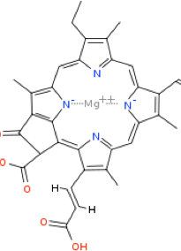

Why didn't I pay more attention in school?
Friday, February 5, 2016
 The rough thing about writing science fiction is that it involves a lot of science along with the fiction.
I realize that sounds like an obvious statement, but think about what that actually means. If I want to be the type of author I'd respect, it means lots and lots of research.
I'm working on a short story that involves me understanding some amount of chemistry. I took chemistry in high school. I mostly coasted through on projects and extra credit. I got the basic concepts, but I never really paid them much attention.
Now that I've been looking into it again, I think I could have liked chemistry if I'd given it a better chance. It's like a jigsaw puzzle with strange rules. See that picture? That's chlorophyll. Check out that magnesium nitrogen structure in the middle. How cool is that?
For some reason, most of the stories that come into mind involve fields of science other than electrical and computer engineering. You know, the field I'd actually be able to write about without doing research. I suppose I should be happy to have reasons to be learning new things, but it's pretty irritating to sit down to write a story and have to stop every few paragraphs to look up things like the chemical composition of chlorophyll. I think what this means, is I actually need friends in each field of science that I can bounce ideas off of, instead of actually trying to figure this stuff out myself. Anyone out there a chemist?